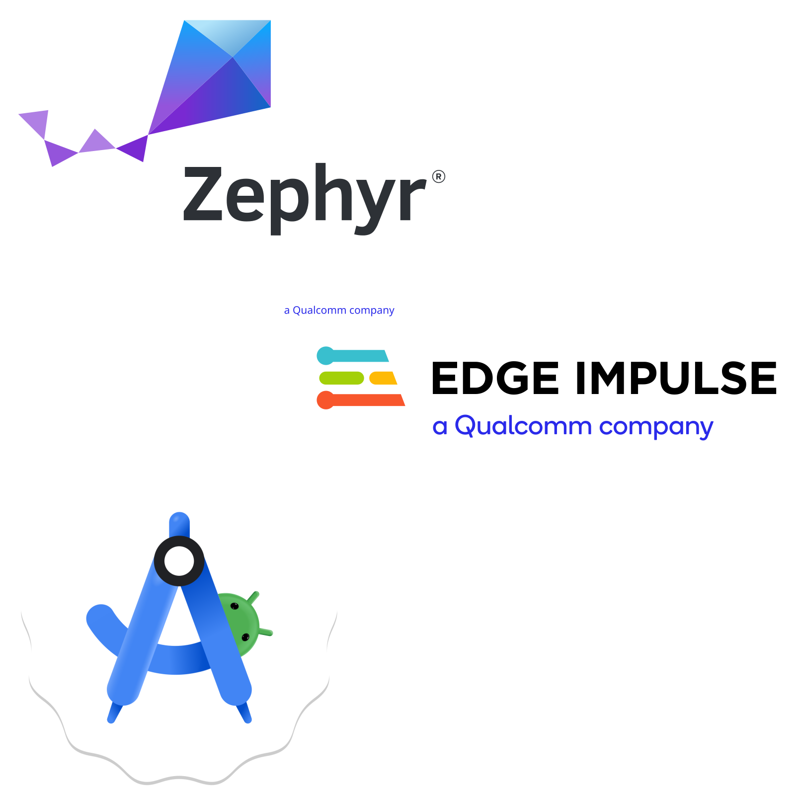
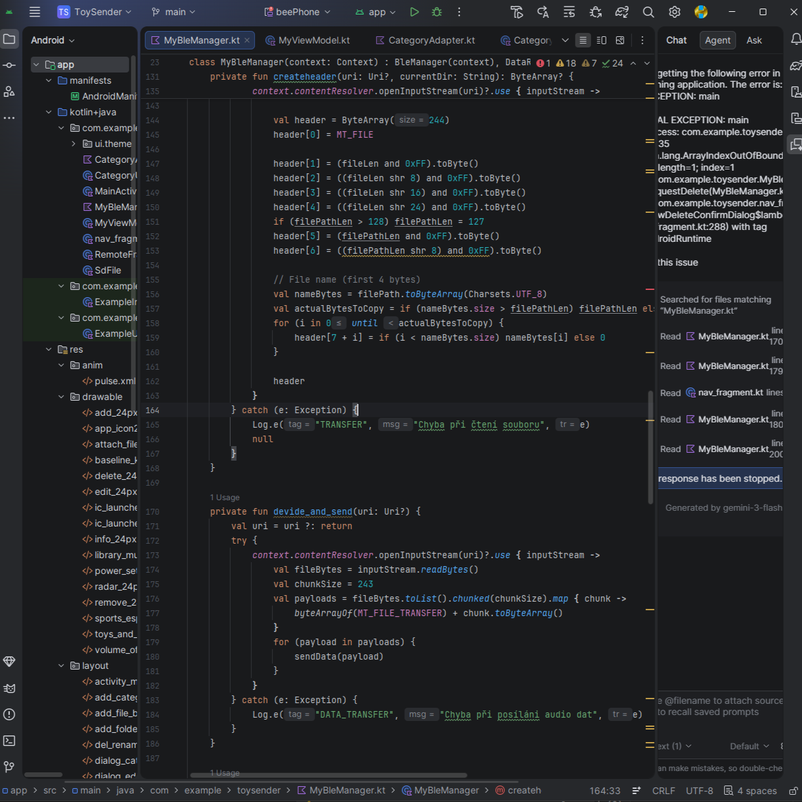
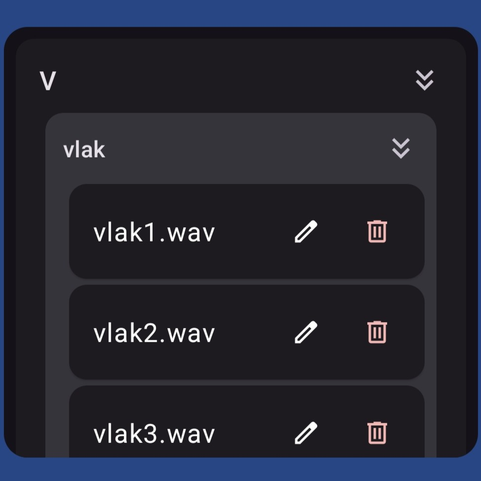
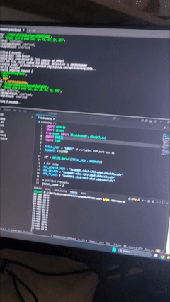

Firmware
Podstata kódu
V této části si popíšeme strukturu kódu, změny od minulé verze a jejich důvody
Přesně se budeme věnovat přechodu z ESB na BLE a také z audiostreamingu na čtení z SD karty.
Podíváme se také na psaní android aplikace v Android Studio a jazyce Kotlin
Také si něco povíme o mém file systému a na to navážeme file transfarem přes BLE
Ukážeme si python script, C kód a aplikaci které umožňují wireless vzorkování pro EdgeImpulse
Nakonec upozorním na některé mé chyby

Myšlenka kódu
Co se uvnitř děje
Hračka
Kód hračky stojí na natrénovaném klasifikátoru ten pomoci EI wrapperu pozná gesto, které je odesláno do modulů pro haptiku a audio. Audio modul na základě gesta vybere zvuk ze struktury audioknihovny který přehraje. Na pozadí dochází k měření baterie, stavu nabíjení a bluetooth advertisingu pro případné připojení telefonu nebo hračky.
Ovladač
Kód Ovladače není nic zvláštního pouze rozpoznává zmáčkuntí nebo podržení tlačítek a tyto akce posílá hračce. Systémové eventy jako stlačení talčítka nebo položení na nabíječku jsou signalizovány hapticky. Na pozadí také běží měření baterie a stavu nabíjení.
Aplikace
Aplikace má na starosti připojení se k hračce a stejnou komunikaci jako ovladač. Navíc je zde zobrazení knihovny zvuků možnost jejich editace mazání a nahrávání
Zrušení streamingu
Jedním z největších zásahů do mého projektu byl právě přechod na SD kartu místo audio streamování.
Důvodem byla snaha o maximální kvalitu a konzistenci zvuku. Jelikož používám 16bit/44,1kHz audio, bylo nutné zajistit stabilní tok 705,6 kb/s. Aby nevznikala velká latence mezi akcí a přehráním audia, byl jsem nucen použít protokol ESB. Moje snaha vylepšit signál vedla k použití nRF21540 DB.
Jelikož jsem měl v té době vizi vlastní development boardy, chtěl jsem zkusit, zda se přidáním nRF21540 můj problém vyřeší. I když k navýšení síly signálu došlo, audio streaming prostě nefungoval spolehlivě – výpadky a poškození audia přetrvávaly v případě, že se hračka hýbala nebo se nacházela za osobou, což je pro tuto aplikaci nepřípustné.
Tou dobou se nabízelo několik řešení: přejít na nRF5340, který má podporu BLE Audio, nebo počkat na blížící se vydání Xiao nRF54L15 Sense. Vedoucí práce mě však podpořil v zachování původní dev board a přidání SD karty.
Přidání SD karty v nRF Connect SDK je nutné provést nejen pomocí prj.conf, ale také v devicetree.overlay (kód vpravo). Já jsem si navíc musel předefinovat piny kvůli kolizi s I2S.
&pinctrl {
custom_spi: custom_spi {
group1 {
psels = <NRF_PSEL(SPIM_SCK, 1, 13)>,
<NRF_PSEL(SPIM_MOSI, 1, 14)>,
<NRF_PSEL(SPIM_MISO, 1, 12)>;
};
};
};
&spi2 {
status = "okay";
pinctrl-0 = <&custom_spi>;
pinctrl-1 = <&custom_spi>;
pinctrl-names = "default", "sleep";
cs-gpios = <&gpio1 15 GPIO_ACTIVE_LOW>;
sdhc0: sdhc@0 {
compatible = "zephyr,sdhc-spi-slot";
reg = <0>;
status = "okay";
label = "SDHC_0";
mmc {
compatible = "zephyr,sdmmc-disk";
status = "okay";
disk-name = "SD";
};
spi-max-frequency = <24000000>;
};
};
/ {
aliases {
i2stx = &i2s0;
};
}
Přechod na BLE
Bluetooth Low Engergy
Přechod na BLE nebyl úplně v plánu, ale s příchodem myšlenky mobilní aplikace byl nutný, jelikož telefony nativně s ESB komunikovat neumí.
Moje prvotní snaha byla nastavit MPSL tak, aby hračka s ovladačem komunikovala přes ESB a telefon s hračkou přes BLE. Nakonec jsem rád, že se mi toto nepovedlo a vše je sjednocené na BLE, i když to znamenalo předělat celou komunikaci.
Jedna ze záludností, které jsem řešil, bylo nastavení MTU (Maximum Transmission Unit). To bylo důležité, jelikož základ je 23 B. Pro ovládací zprávy to bohatě stačilo, avšak pro eventy a data to bylo málo. O tom, jak MTU navýšit, se dozvíte zde.
Tvorba aplikace
BeeWare, Flet, Android Studio & Kotlin
Jelikož jsem měl před tvorbou aplikace již hotový Python skript na BLE přijímání dat, chtěl jsem ho zužitkovat a aplikaci psát v Pythonu. Pomocí cross-platform GUI frameworků jsem ji chtěl distribuovat jako aplikaci na Windows, macOS, Linux, Android i iOS.
Zkoušel jsem tedy BeeWare a Flet. U obou jsem však narazil na problémy s připojením k hračce kvůli BLE. V Pythonu se pro BLE využívá knihovna Bleak, ta ale na Androidu ani iOS nefunguje.
Proto jsem se rozhodl udělat vše od začátku a aplikaci vytvořit jen pro Android v Android Studiu, kde se využívá jazyk podobný Javě, a to Kotlin. Syntaxe mi byla úplně cizí, proto jsem dost využíval Gemini, která je přímo zabudovaná v Android Studiu.


File system
Přístup k datům hračky
Z důvodu šetření paměti, čistoty a rychlosti jsem nechtěl ukládat všechny cesty k souborům jako dlouhé řetězce (stringy), ani složitě prohledávat celou SD kartu. Pro zvuky jsem si tedy vytvořil strukturu knihovny a zvolil pevný formát pojmenovávání ve tvaru "[Velké písmeno]_[jméno složky]/[název souboru].wav". V praxi to vypadá například takto: A_prase/chrocht.wav.
Díky tomuto systému si procesor pamatuje pouze názvy adresářů namísto dlouhých cest. Zvuk se vybírá na základě prohledávání konkrétního adresáře pomocí indexu, takže nedochází k náročnému porovnávání řetězců. Navíc uživatel není nucen zadávat správný formát ručně – ten je doplňován automaticky, jelikož se GUI aplikace tváří jako struktura adresářů a koncových .wav souborů.
Při jakékoliv úpravě ze strany uživatele je seznam souborového systému přegenerován a znovu odeslán do aplikace, čímž je dodržen princip single source of truth (jediný zdroj pravdy).
Bezdrátové vzorkování
EI forwarder, python, com0com a BLE
Vzorkovat bezdrátově pro mě bylo důležité kvůli plynulosti, rychlosti a pohodlí. Mít totiž hračku neustále připojenou přes kabel není zrovna efektivní způsob, jak provádět například gesto kutálení.
Proces funguje následovně: nejprve je nutné do Xiao nahrát kód pro vzorkování. Poté se na PC spustí Python skript, který se připojí k hračce a čte data přijímaná přes BLE. Jelikož skript potřebuje COM port, který otevře a začne do něj data zapisovat, je nutné jej nejprve vytvořit pomocí nástroje com0com. Při vytváření je také třeba zaškrtnout "use Port class", aby jej EI data forwarder viděl.
Nakonec se stačí standardně připojit do projektu a vybrat druhý port, kde končí data z Pythonu. Návod, jak se připojit k projektu, naleznete v sekci Software/Edge Impulse na Staré stránce
Na GIFu můžete vidět demonstraci tohoto přístupu. Problémů s nestabilní vzorkovací frekvencí při následném učením jsem si nevšiml, koneckonců si "Impuls" (projekt) data přesempluje na vámi zvolenou frekvenci.
Na Xiao fungují frekvence 52 a 104 Hz. Já používám 104 Hz, přičemž přes bezdrátovou variantu se studio dmnívá, že je frekvence od 106-110 Hz. Další všc, kterou je třeba brát v úvahu, je mírné zpoždení dat. Proto je nutné pohyb (například pád) vykonat s mírným předstihem před započetím vzorkování. Myslím si však, že se na to dá adaptovat a tanto způsbo má více výhod než připojení kabelem.
